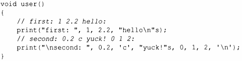
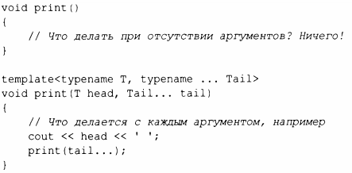
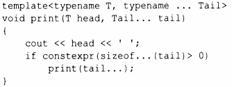

⇐7.3.2 Абстракции с использованием шаблонов 7.4.1 Выражения свертки⇒
Шаблон может быть определен как принимающий произвольное количество аргументов произвольных типов. Такой шаблон называется вариативным шаблоном (variadic template). Рассмотрим простую функцию для вывода значений любого типа, для которых определен оператор<<:
Традиционно реализация вариативного шаблона заключалась в том, чтобы отделить первый аргумент от остальных, а затем рекурсивно вызвать вариативный шаблон для остальных аргументов:
typename ... указывает, что Tail представляет собой последовательность типов. Tail ... указывает, что tail является последовательностью значений типов, перечисленных в Tail. Параметр, объявленный с помощью троеточия ... , называется пакетом параметров. Здесь tail - это аргумент функции, который представляет собой пакет параметров, элементы которого имеют типы, найденные в аргументе шаблона, который представляет собой пакет параметров Tail. Таким образом, print () может принимать любое количество аргументов любых типов.
Вызов print () разделяет аргументы на голову (первый элемент) и хвост (остальные элементы). Выполняется вывод головного элемента, после чего print () вызывается для хвоста. В конечном итоге tail становится пустым, поэтому нам нужна версия pr int() без аргументов, способная справиться с этой ситуацией и завершить рекурсию. Можно обойтись и без print () без аргументов, используя для его исключения if времени компиляции:
Я использовал if времени компиляции (§6.4.3), а не if времени выполнения, чтобы избежать генерации последней, никогда не вызываемой функции print () без аргументов.
Сила вариативных шаблонов заключается в том, что они могут принимать любые аргументы, которые вы захотите им передать. Слабые же их стороны включают следующее.
Из-за гибкости вариативные шаблоны широко используются в стандартной библиотеке, иногда даже чрезмерно широко.